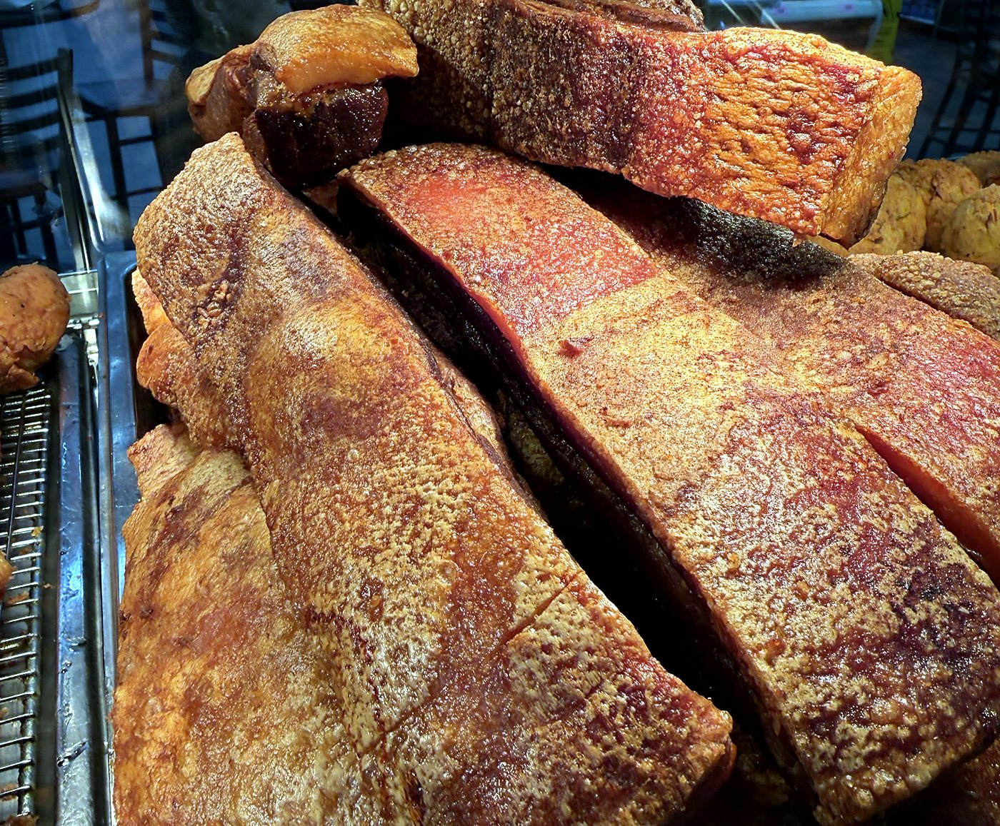
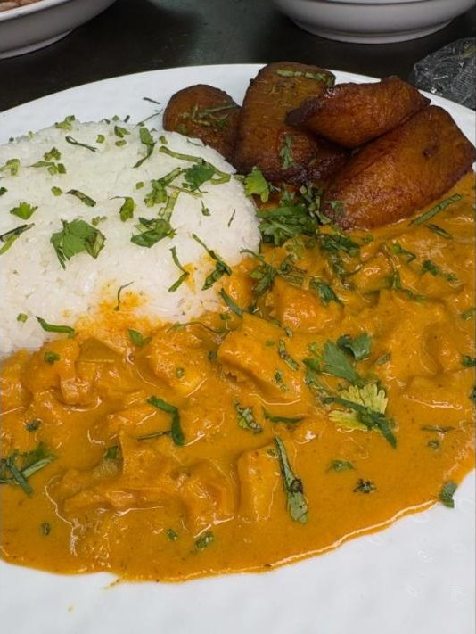

A Latin Thanksgiving: pernil, hornado and the sides your family actually wantsUn Thanksgiving latino: pernil, hornado y los acompañantes que tu familia sí quiere
🦃 Order Thanksgiving dinner online →🦃 Ordena tu cena de Thanksgiving en línea →

In a lot of South Florida homes the turkey is the guest, not the star. Next to it you'll find pernil with crackling skin, a tray of arroz con gandules, yuca swimming in mojo, maduros, tamales somebody's tía made, and a tres leches nobody admits to cutting first. Thanksgiving is Thursday, November 26. Here's how to put that table together, what to cook, what to order ready-made, and where to find every ingredient in one trip to Flamingo Supermarket in Cooper City.
The mains: turkey, and then the real fight
- Pernil (Puerto Rico & Cuba). Bone-in pork shoulder, marinated overnight in garlic, oregano and naranja agria, roasted low until the skin cracks. Our recipe of the week walks you through it, and pork shoulder is on sale in this week's ad.
- Hornado (Ecuador). Slow-roasted pork the Ecuadorian way, served with mote, llapingachos and agrio. If you'd rather not run the oven for eight hours, La Casita de los Ñaños makes it to order.
- Pavo con mojo. Rub the turkey with the same mojo you'd use on pernil: garlic, sour orange, cumin, oregano. It's the bridge between the two traditions at the table.
- Pollo frito for the kids. There's always one. Papi Pollo has them covered.
The sides that disappear first
- Arroz con gandules (Puerto Rico): rice with pigeon peas, sofrito and a little pork. Gandules, sazón, sofrito and recao are in the Caribbean aisle.
- Yuca con mojo (Cuba): boiled yuca with hot garlic-citrus oil. Fresh and frozen yuca both work.
- Maduros: ripe plantains, fried until the edges go dark. Buy the plantains green this weekend and they'll be black-ripe by Thursday.
- Mashed calabaza or green banana: a Latin swap for mashed potatoes. Calabaza and green bananas are both in this week's ad.
- Tamales, humitas and hallacas (Ecuador, Colombia, Venezuela): order them by the dozen and steam them the morning of.
- Ensalada rusa: potato, beet and carrot salad, the cold side that shows up at every Latin holiday.
Dessert and drinks
- From D'Ambato: tres leches, Beso de Ángel (Angel's Kiss) cake, mousse cakes and pastelitos. Cakes need 48 hours' notice, and Thanksgiving week fills up, so order early.
- Flan and arroz con leche if you're making dessert at home: condensed and evaporated milk, cinnamon sticks and vanilla are all on the shelf.
- Fresh juice by the gallon from Cane Cartel, plus Latin sodas from 17+ countries for the kids' table.
Cook it, or let us cook it
You don't have to choose all or nothing. Most families we see do the turkey and one side at home and order the rest. Our kitchens cater roasted turkey, pernil, hornado, rice, maduros, mashed potatoes, roasted vegetables and desserts; see the full Thanksgiving dinner menu and our holiday catering page. Call (954) 228-0435 and tell us the headcount.
A simple Thanksgiving-week timeline
- This weekend (Nov 14–16): place catering and cake orders. Buy plantains green.
- Monday–Tuesday (Nov 23–24): shop the dry goods: rice, gandules, sofrito, spices, condensed milk. Thaw the turkey in the fridge.
- Wednesday (Nov 25): marinate the pernil and the turkey overnight. Make the flan.
- Thursday (Nov 26): pernil in the oven early, turkey after. Pick up your catering order at the time we give you, then fry the maduros last.
Why shop it at Flamingo
- Products from 17+ countries in one store: Ecuadorian, Colombian, Cuban, Puerto Rican, Venezuelan, Peruvian and Mexican brands next to the American Thanksgiving basics.
- A full butcher counter for pork shoulder, whole turkeys, turkey wings and drumsticks, plus the weekly ad every Thursday.
- Six kitchens and a bakery under the same roof, so the part you don't cook is one counter away.
- 2581 N Hiatus Rd in Embassy Lakes, minutes from Pembroke Pines, Davie, Weston, Miramar and Hollywood. Open every day, 7 AM to 10 PM.
Quick answers
When is Thanksgiving 2026? Thursday, November 26.
Can I order pernil or hornado ready to eat? Yes, made to order. Call (954) 228-0435, the earlier the better for Thanksgiving week.
Do you sell whole turkeys? Yes, along with turkey wings, drumsticks and everything for the sides.
How much notice do cakes need? 48 hours at the D'Ambato counter or by phone.
Are you open Thanksgiving week? Yes, every day 7 AM to 10 PM. For Thanksgiving Day itself, call (954) 228-0435 to confirm holiday hours.
En muchas casas del sur de Florida el pavo es el invitado, no el protagonista. A su lado aparece un pernil con el cuero crujiente, una bandeja de arroz con gandules, yuca bañada en mojo, maduros, los tamales de la tía y un tres leches que nadie admite haber empezado. Thanksgiving es el jueves 26 de noviembre. Así puedes armar esa mesa: qué cocinar, qué pedir listo y dónde encontrar cada ingrediente en una sola visita a Flamingo Supermarket en Cooper City.
Los platos fuertes: el pavo, y después la verdadera competencia
- Pernil (Puerto Rico y Cuba). Paleta de cerdo con hueso, adobada desde la noche anterior con ajo, orégano y naranja agria, asada lento hasta que el cuero truene. Nuestra receta de la semana te guía paso a paso, y la paleta de cerdo está en oferta en el folleto de esta semana.
- Hornado (Ecuador). Cerdo asado lento al estilo ecuatoriano, con mote, llapingachos y agrio. Si no quieres tener el horno prendido ocho horas, La Casita de los Ñaños lo prepara por encargo.
- Pavo con mojo. Unta el pavo con el mismo mojo del pernil: ajo, naranja agria, comino y orégano. Es el puente entre las dos tradiciones en la mesa.
- Pollo frito para los niños. Siempre hay uno. Papi Pollo lo resuelve.
Los acompañantes que se acaban primero
- Arroz con gandules (Puerto Rico): arroz con gandules, sofrito y un toque de cerdo. Gandules, sazón, sofrito y recao están en el pasillo del Caribe.
- Yuca con mojo (Cuba): yuca hervida con aceite caliente de ajo y cítricos. Sirve fresca o congelada.
- Maduros: plátanos maduros fritos hasta que las orillas se oscurezcan. Cómpralos verdes este fin de semana y estarán negros y dulces para el jueves.
- Puré de calabaza o de verde: el cambio latino del puré de papa. La calabaza y el plátano verde están en el folleto de esta semana.
- Tamales, humitas y hallacas (Ecuador, Colombia, Venezuela): pídelos por docena y cocínalos al vapor esa mañana.
- Ensalada rusa: papa, remolacha y zanahoria, el acompañante frío que aparece en toda fiesta latina.
Postre y bebidas
- De D'Ambato: tres leches, torta Beso de Ángel, tortas de mousse y pastelitos. Las tortas necesitan 48 horas de anticipación y la semana de Thanksgiving se llena, así que encarga temprano.
- Flan y arroz con leche si el postre lo haces en casa: leche condensada y evaporada, canela en rama y vainilla están en la percha.
- Jugo natural por galón de Cane Cartel, y refrescos latinos de más de 17 países para la mesa de los niños.
Cocínalo tú, o deja que lo cocinemos nosotros
No tiene que ser todo o nada. La mayoría de las familias hacen el pavo y un acompañante en casa y piden el resto. Nuestras cocinas preparan pavo asado, pernil, hornado, arroz, maduros, puré de papa, vegetales asados y postres; mira el menú de la cena de Thanksgiving y nuestro catering de fiestas. Llama al (954) 228-0435 y dinos para cuántas personas.
Un plan sencillo para la semana de Thanksgiving
- Este fin de semana (14–16 nov): haz tus pedidos de catering y tortas. Compra los plátanos verdes.
- Lunes y martes (23–24 nov): compra lo seco: arroz, gandules, sofrito, especias, leche condensada. Descongela el pavo en la nevera.
- Miércoles (25 nov): adoba el pernil y el pavo para la noche. Haz el flan.
- Jueves (26 nov): el pernil al horno temprano, el pavo después. Recoge tu pedido a la hora acordada y fríe los maduros al final.
Por qué comprarlo en Flamingo
- Productos de más de 17 países en una sola tienda: marcas ecuatorianas, colombianas, cubanas, puertorriqueñas, venezolanas, peruanas y mexicanas junto a lo básico del Thanksgiving americano.
- Carnicería completa para paleta de cerdo, pavos enteros, alas y muslos de pavo, y el folleto semanal cada jueves.
- Seis cocinas y una panadería bajo el mismo techo: lo que no cocinas está a un mostrador de distancia.
- 2581 N Hiatus Rd en Embassy Lakes, a minutos de Pembroke Pines, Davie, Weston, Miramar y Hollywood. Abierto todos los días de 7 AM a 10 PM.
Respuestas rápidas
¿Cuándo es Thanksgiving 2026? El jueves 26 de noviembre.
¿Puedo pedir pernil u hornado listo? Sí, por encargo. Llama al (954) 228-0435; para la semana de Thanksgiving, mientras antes mejor.
¿Venden pavos enteros? Sí, además de alas y muslos de pavo y todo para los acompañantes.
¿Con cuánta anticipación se piden las tortas? 48 horas en el mostrador de D'Ambato o por teléfono.
¿Abren la semana de Thanksgiving? Sí, todos los días de 7 AM a 10 PM. Para el mismo día de Thanksgiving, llama al (954) 228-0435 para confirmar el horario.
